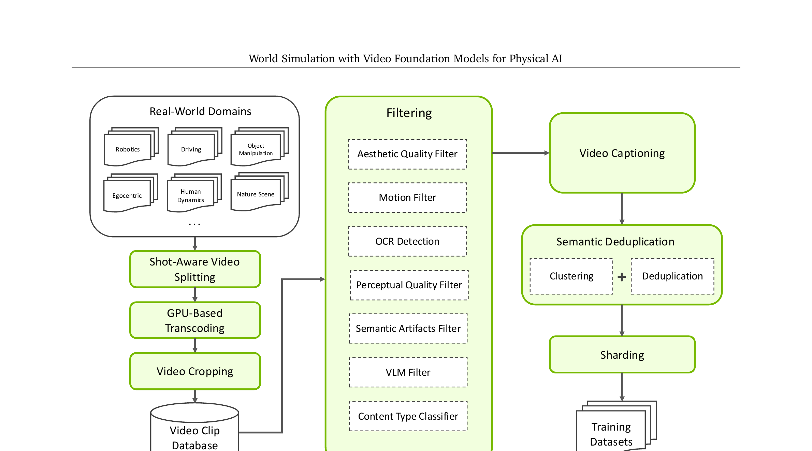
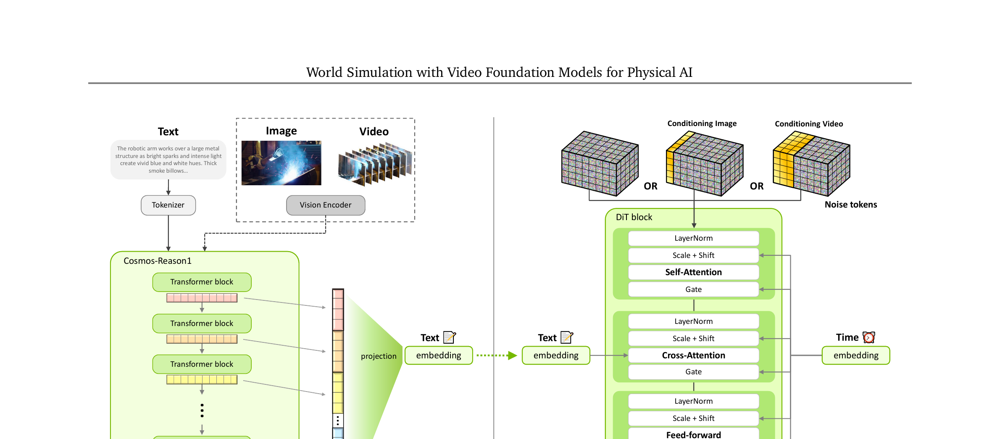
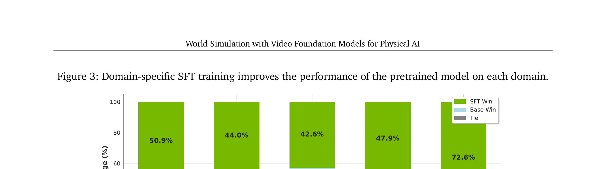
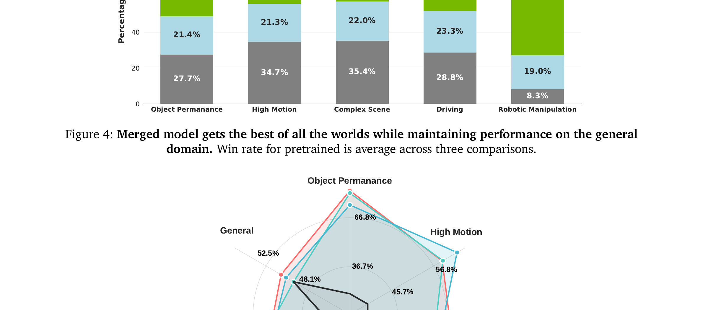
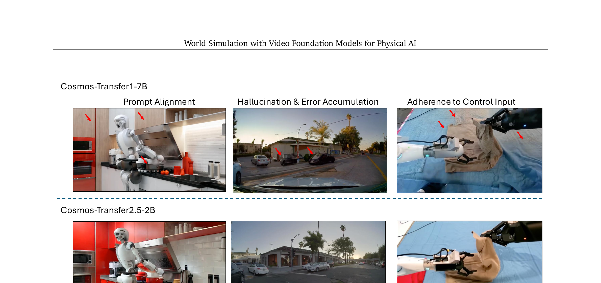
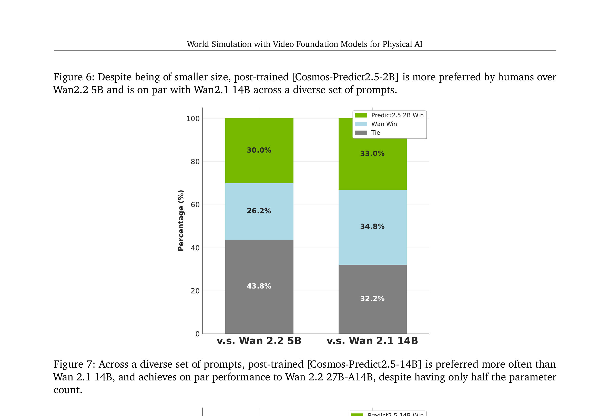

Cosmos-Predict2.5 · 面向 Physical AI 的视频基础世界模型
论文定位：为什么机器人训练需要视频世界模型
在真实世界里训练机器人又贵又危险——机器出错可能损坏设备或伤人，而且要覆盖所有场景几乎不可能。解决思路：用一个高质量的"视频世界模拟器"来替代真实环境，让机器人的感知、规划和策略评估全部在"数字世界"里进行，调好了再部署到真实硬件。Cosmos-Predict2.5 就是 NVIDIA 提供的这把"数字世界生成引擎"——可以根据文字、图片或视频片段，生成物理上真实可信的未来视频。
Cosmos-Predict2.5 是对前一代 Cosmos-Predict1 的全面升级，核心改进体现在三个维度：
| 统一模式 | Text2World / Image2World / Video2World 三种模式合并为一个模型 |
| 模型规格 | Cosmos-Predict2.5-2B（32层）和 14B（36层），3D RoPE 位置编码 |
| 视频压缩 | WAN2.1 VAE，时间×空间 = 4×8×8 压缩比；生成 93 帧 @ 16fps ≈ 5.8 秒视频 |
| 开源协议 | NVIDIA Open Model License，代码和权重均公开 |
DreamDojo（2026）直接使用 Cosmos-Predict2.5 作为视频生成骨架，并在其上加入了"潜在动作注入"和"Self Forcing 蒸馏"机制，使其能接受机器人动作条件，实现跨具身泛化的世界模型。MotionWAM / SONIC 同样以 Cosmos-Predict2.5 为基底，加入自己的动作条件机制。
数据管道：7 阶段视频策展，只有 4% 通过
上一节确立了 Cosmos-Predict2.5 相比 Cosmos-1 的改进方向。但好模型的前提是好数据——论文在原有 Cosmos-1 数据管道上做了大规模扩充和质量升级。核心结论：从 350 亿原始视频中只保留 2 亿高质量片段（约 4% 存活率），用于预训练。严格过滤是生成质量的关键保障。
七阶段过滤管线

5 个领域专项数据集
在通用预训练数据之外，论文还为 Physical AI 的五个目标领域定制了专项数据：
展开原文 · 数据管道规模对比
"In contrast to the pipeline in [Cosmos-Predict1], the [Cosmos-Predict2.5] pipeline scales to a much larger volume, processing 35 million hours of raw video compared to 20 million clips and producing over 6 billion clips from which 200 million high-quality clips are retained."
模型架构：Flow Matching DiT + WAN2.1 VAE + Cosmos-Reason1
有了好数据，接下来是建模方式。Cosmos-Predict2.5 的架构是一个潜变量扩散 Transformer（Latent DiT），核心可以理解为：先用 VAE 把视频压缩成"潜在视频"，然后用一个 DiT（Diffusion Transformer）在潜变量空间里学习"如何从噪声走向真实视频"。训练目标从上一代的 EDM 噪声预测改成了更直接的 Flow Matching 速度场预测。
Flow Matching：比扩散模型更直接的训练目标
可以把生成过程想象成从 A 地（纯噪声 $\mathbf{x}_0$）走到 B 地（真实视频 $\mathbf{x}_1$）。EDM 是"猜测下一步的噪声"，Flow Matching 是"直接告诉模型往哪个方向走、走多快"——更直接，也更好优化。
- $\mathbf{x}_t$
- 时刻 $t$ 的中间状态：$t=0$ 时是真实视频，$t=1$ 时是纯噪声
- $(1-t)\mathbf{x} + t\boldsymbol{\epsilon}$
- 在真实视频和噪声之间做线性插值——相当于"按比例混合"
- $\mathbf{u}(\mathbf{x}_t, t; \mathbf{c}; \theta)$
- 模型输出的速度预测，条件 $\mathbf{c}$ 包含文字 embedding、参考帧等
- $\mathbf{v}_t = \boldsymbol{\epsilon} - \mathbf{x}$
- Ground truth 速度场——从噪声方向指向真实数据（类比 GPS 导航的"目标方向"）
- $\|\cdot\|^2$
- MSE 损失，让预测速度和真实速度尽量一致
整体架构图

去掉了绝对位置 embedding：Cosmos-1 用了绝对位置 embedding（固定了分辨率和帧数范围），Predict2.5 只保留 3D RoPE 相对位置编码。这让模型在后训练阶段可以处理更高分辨率（720p）和更长视频序列，而不受预训练时序列长度的限制。
训练配方：预训练 → SFT → 模型合并 → RL → 蒸馏
架构确定了，下一个问题是怎么训练。Cosmos-Predict2.5 采用了一条复杂但精心设计的五阶段训练流水线。每个阶段解决不同的问题：预训练建立通用世界知识，SFT 打磨各领域专项能力，模型合并把专项能力融合，RL 对齐人类偏好，蒸馏提升推理速度。
第 1 阶段：多分辨率渐进预训练
从 Text2Image @ 256p 出发，逐步提升到 Video2World @ 720p（1280×704），共 5 个课程阶段。用 logit-normal 时间步采样 + shifted schedule（β=5 @ 720p）确保高噪声区域充分训练。训练结束后在 4K 视频上做 cooldown 微调，提升细节和运动流畅度。数据：2 亿片段。
输入是什么：随机噪声，以及当前画面、语言指令或机器人状态等条件信息。噪声只是生成过程的起点，不是机器人真的要执行的动作。
这一步究竟做什么：从 Text2Image @ 256p 出发，逐步提升到 Video2World @ 720p（1280×704），共 5 个课程阶段。用 logit-normal 时间步采样 + shifted schedule（β=5 @ 720p）确保高噪声区域充分训练。训练结束后在 4K 视频上做 cooldown 微调，提升细节和运动流畅度。数据：2 亿片段。
输出到哪里：参数得到更新的模型，或能供下一轮训练使用的新监督信号。这个结果会交给下一步“阶段：领域专项 SFT（监督微调）”继续处理。
为什么不能省略：前面的数据或分数本身不会自动改变模型；必须通过损失函数把误差信号变成参数更新。
第 2 阶段：领域专项 SFT（监督微调）
用 InternVideo2 embedding 训练多头分类器把数据分成 6 类：客体永久性（10.4M）、高运动（1.0M）、复杂场景（1.6M）、驾驶（3.1M）、机器人操作（730k）、4K（388k）。每个领域单独训练一个专项 SFT 模型（30k iterations，batch=256），各自在专项测试集上都显著优于预训练基底。
输入是什么：来自上一步“阶段：多分辨率渐进预训练”的产物：参数得到更新的模型，或能供下一轮训练使用的新监督信号。本步骤还会按论文设置读取当前条件、时间步或训练信号。
这一步究竟做什么：用 InternVideo2 embedding 训练多头分类器把数据分成 6 类：客体永久性（10.4M）、高运动（1.0M）、复杂场景（1.6M）、驾驶（3.1M）、机器人操作（730k）、4K（388k）。每个领域单独训练一个专项 SFT 模型（30k iterations，batch=256），各自在专项测试集上都显著优于预训练基底。
输出到哪里：参数得到更新的模型，或能供下一轮训练使用的新监督信号。这个结果会交给下一步“阶段：模型合并（Model Merging）”继续处理。
为什么不能省略：前面的数据或分数本身不会自动改变模型；必须通过损失函数把误差信号变成参数更新。
第 3 阶段：模型合并（Model Merging）
用 TIES/DARE-TIES 等 4 种权重合并方法，通过网格搜索超参数生成 20+ 个候选合并模型，人工评估选出最佳。最终合并模型（Model Soup 变体）在通用域 + 所有专项领域上同时取得高水平，避免了单模型遗忘问题。
输入是什么：来自上一步“阶段：领域专项 SFT（监督微调）”的产物：参数得到更新的模型，或能供下一轮训练使用的新监督信号。本步骤还会按论文设置读取当前条件、时间步或训练信号。
这一步究竟做什么：用 TIES/DARE-TIES 等 4 种权重合并方法，通过网格搜索超参数生成 20+ 个候选合并模型，人工评估选出最佳。最终合并模型（Model Soup 变体）在通用域 + 所有专项领域上同时取得高水平，避免了单模型遗忘问题。
输出到哪里：参数得到更新的模型，或能供下一轮训练使用的新监督信号。这个结果会交给下一步“阶段：强化学习（RL Post-training）”继续处理。
为什么不能省略：它承担上下两步之间的接口；缺少它，前一步产生的信息无法以正确格式或正确含义传到下一步。
第 4 阶段：强化学习（RL Post-training）
采用 VideoAlign 作为奖励模型（VLM-based，评估文字对齐度、运动质量、视觉质量）。使用 GRPO 算法：每个 Prompt 生成 8 个输出，按奖励归一化后计算优势值。在合并模型上训练 256 步（batch=32）。结果：RL 版本在人类投票中约 40% 胜出（vs 18.9% 败）。
输入是什么：来自上一步“阶段：模型合并（Model Merging）”的产物：参数得到更新的模型，或能供下一轮训练使用的新监督信号。本步骤还会按论文设置读取当前条件、时间步或训练信号。
这一步究竟做什么：采用 VideoAlign 作为奖励模型（VLM-based，评估文字对齐度、运动质量、视觉质量）。使用 GRPO 算法：每个 Prompt 生成 8 个输出，按奖励归一化后计算优势值。在合并模型上训练 256 步（batch=32）。结果：RL 版本在人类投票中约 40% 胜出（vs 18.9% 败）。
输出到哪里：一个或多个候选未来、动作或轨迹，以及必要的中间状态。这个结果会交给下一步“阶段：时间步蒸馏（Timestep Distillation）”继续处理。
为什么不能省略：它承担上下两步之间的接口；缺少它，前一步产生的信息无法以正确格式或正确含义传到下一步。
第 5 阶段：时间步蒸馏（Timestep Distillation）
用混合前向-反向联合蒸馏框架（rCM），把教师模型（35 步）蒸馏为学生模型（4 步），量化指标几乎无损（Table 7/8 显示 Domain Score 差距 <1%）。基础设施支持 Flash Attention + JVP、FSDP2、Context Parallelism。
输入是什么：来自上一步“阶段：强化学习（RL Post-training）”的产物：一个或多个候选未来、动作或轨迹，以及必要的中间状态。本步骤还会按论文设置读取当前条件、时间步或训练信号。
这一步究竟做什么：用混合前向-反向联合蒸馏框架（rCM），把教师模型（35 步）蒸馏为学生模型（4 步），量化指标几乎无损（Table 7/8 显示 Domain Score 差距 <1%）。基础设施支持 Flash Attention + JVP、FSDP2、Context Parallelism。
输出到哪里：参数得到更新的模型，或能供下一轮训练使用的新监督信号。这是图中这条链路的最终产物，随后会进入真实执行、模型更新或指标评测。
为什么不能省略：前面的数据或分数本身不会自动改变模型；必须通过损失函数把误差信号变成参数更新。
SFT + 模型合并的效果


RL 后训练有效：在 pre-trained 模型和合并模型上，RL 都显著提升了 VideoAlign 奖励（文字对齐 +0.14，视觉质量 +0.23）。人类投票结果：RL 版本约 40% 胜率 vs 合并模型的 19.6%。蒸馏基本无损（4步 vs 35步，Domain Score 差距 <1%）。
Cosmos-Transfer2.5：仿真→真实的 ControlNet 桥梁
训练好了世界生成模型，下一个问题是：机器人训练常用 NVIDIA IsaacSim 等物理仿真器生成的图像，但仿真器图像和真实图像之间存在明显的"视觉鸿沟"——光照、纹理、阴影都太假。Cosmos-Transfer2.5 就是一个"图像翻译器"，把仿真器渲染的图（或者深度图、边缘图、语义分割图等条件）转换成视觉上真实可信的视频，弥合 Sim2Real 差距。
架构上继承自 Cosmos-Transfer1-7B，但做了关键改进：把 4 个控制块均匀分布在主干每隔 7 层插入一个（而非全部插在最前面），让控制信号更均匀渗透到网络各层，生成更一致。

| 模型 | Blur SSIM↑ | Edge F1↑ | Depth si-RMSE↓ | Seg mIoU↑ | Overall Quality↑ |
|---|---|---|---|---|---|
| Cosmos-Transfer1-7B Uniform | 0.82 | 0.26 | 0.70 | 0.74 | 9.24 |
| Cosmos-Transfer2.5-2B Blur | 0.90 | 0.26 | 0.59 | 0.75 | 9.75 |
| Cosmos-Transfer2.5-2B Uniform | 0.87 | 0.41 | 0.67 | 0.76 | 9.31 |
Cosmos-Transfer2.5 类比于图像领域的 ControlNet（Stable Diffusion + 骨架/边缘控制）。区别在于：① 作用于视频而非图像；② 使用 Cosmos-Predict2.5 的 Flow Matching DiT 而非 U-Net；③ 专为 Physical AI（机器人、自动驾驶）场景定制了训练数据。
下游应用：机器人策略学习 / 合成数据 / 多视角驾驶
Cosmos-Transfer2.5 的各项能力如何在真实 Physical AI 任务中落地？论文展示了三个核心应用：(1) 用合成视频增强机器人策略训练；(2) 为 VLA 模型生成多样化训练数据；(3) 多视角视频生成支持自动驾驶仿真。
应用 1：机器人策略视觉增强
实验设置：双臂 Kinova Gen3 机器人，100 次人类遥操作苹果/碗抓放演示，训练 UNet-based Diffusion Policy。测试时引入对抗性视觉扰动（改变背景、物体外观、光照），评估策略鲁棒性。
Cosmos-Transfer2.5 生成多样化视觉风格的增强视频（改变颜色、纹理、光照）→ 扩充训练集 → 成功率大幅提升，尤其在 OOD（out-of-distribution）视觉条件下。
应用 2：VLA 合成数据生成
用 Cosmos-Predict2.5 生成机器人操作的合成视频，作为 VLA 模型（如 π₀）的训练数据来源。动作条件由已有机器人数据的动作序列提供，视频生成覆盖更多场景和视觉变化，缓解 VLA 训练数据稀缺问题。
应用 3：相机可控多视角驾驶仿真
在 Cosmos-Predict2.5 上微调出多视角生成能力，以世界场景图（road boundary + 3D bounding boxes）作为控制条件，同步生成 7 路摄像头的一致性视频，用于自动驾驶策略评估和数据增强。
这三个应用共同指向同一个问题的解决方案：真实机器人数据稀缺。用 Cosmos-Predict2.5 生成的合成视频可以：① 弥补稀有任务的训练数据不足；② 提供可控的 OOD 测试场景；③ 通过 Sim2Real 转换让仿真器数据也变得"可用"。这和 DreamDojo 的核心动机高度一致。
实验结果：PAI-Bench 指标 + 人类偏好评估
用 PAI-Bench（Physical AI Generation Benchmark）评估，包含两个分数：Domain Score（VQA-based，跨 7 个物理 AI 领域）和 Quality Score（8 个文字到视频/图像生成指标的平均）。综合来看，Cosmos-Predict2.5 在 I2W 任务上拿到最好成绩，在 T2W 任务上与更大的 Wan2.2-27B-A14B 持平。
| 模型 | T2W Domain↑ | T2W Quality↑ | T2W Overall↑ | I2W Domain↑ | I2W Quality↑ | I2W Overall↑ |
|---|---|---|---|---|---|---|
| CP2.5-2B [pre-train] | 0.782 | 0.720 | 0.751 | 0.824 | 0.775 | 0.799 |
| CP2.5-2B [post-train] | 0.804 | 0.732 | 0.768 | 0.840 | 0.779 | 0.810 |
| CP2.5-14B [post-train] | 0.803 | 0.732 | 0.768 | 0.838 | 0.781 | 0.810 |
| Wan2.2-27B-A14B | 0.810 | 0.728 | 0.769 | 0.841 | 0.772 | 0.806 |
CP2.5 = Cosmos-Predict2.5。Wan2.2-27B-A14B 参数量是 Cosmos-Predict2.5-14B 的 1.9 倍。

与 Embodied AI 的联系：为什么 DreamDojo 和 MotionWAM 都选它
作为精读笔记的最后一节，把 Cosmos-Predict2.5 放回到更大的 Embodied AI 技术地图里看。为什么这篇论文会在 DreamDojo（2026/02）和 MotionWAM 中被直接引用为基础组件？它解决了什么别的模型没解决的问题？它的局限又是什么？
Cosmos-Predict2.5 在 Embodied AI 技术地图中的位置
Cosmos-1（2025）→ EDM 扩散 + T5 编码器 + 视频生成
Cosmos-Predict2.5（2026/02）→ Flow Matching + Cosmos-Reason1 + SFT/RL/合并后训练
Cosmos-3（2026/06）→ 完全不同的范式：Mixture-of-Transformers，统一 Language/Image/Video/Audio/Action 五模态
Cosmos-3 不是 Cosmos-Predict2.5 的"下一版本"，而是对整个 Physical AI 世界模型架构的重新设计——从"视频生成基座"跃迁到"全模态统一世界模型"。
① 无长时一致性保证：自动回归生成长于 93 帧的视频时，各 chunk 之间可能出现外观漂移和物理不一致（虽然 Transfer2.5 有所缓解）。
② 生成速度限制：蒸馏版本虽然仅需 4 步，但 5.8 秒视频生成仍需数秒，无法实时（相比之下 DreamDojo 的蒸馏 pipeline 达到 10.81 FPS）。
③ 不懂动作语义：CP2.5 本质上是视频生成模型，对"关节角度""末端执行器位置"没有内在理解，必须由下游工作（DreamDojo、MotionWAM）额外注入动作条件。
→ 继续阅读：Cosmos 3 (Omnimodal World Models)